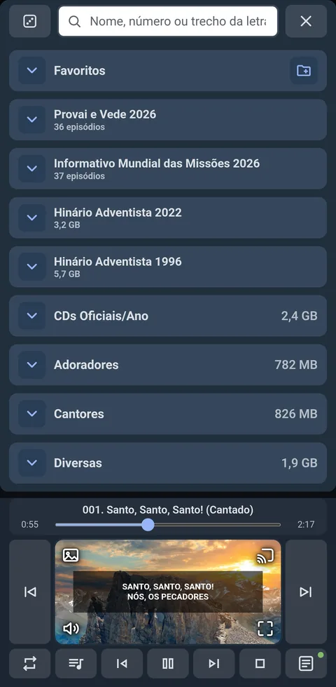
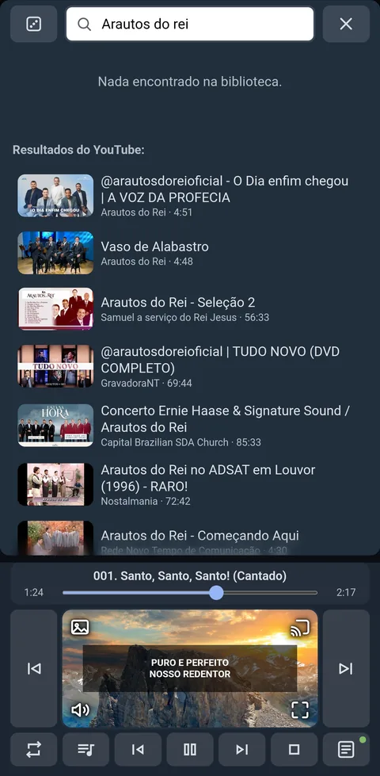
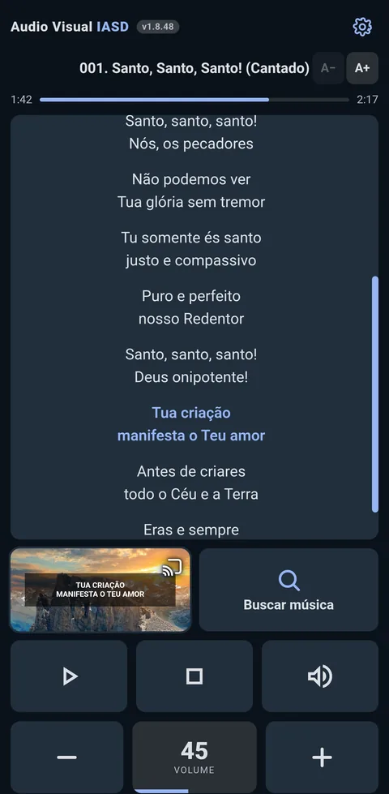
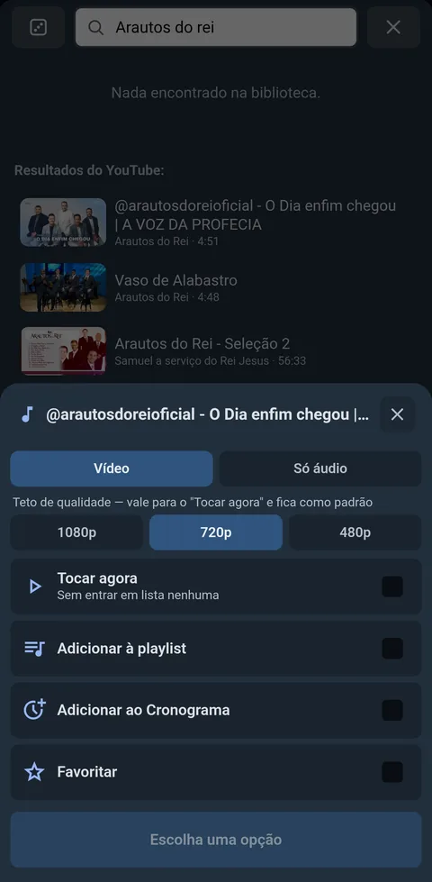
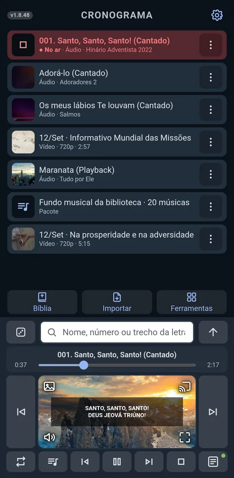
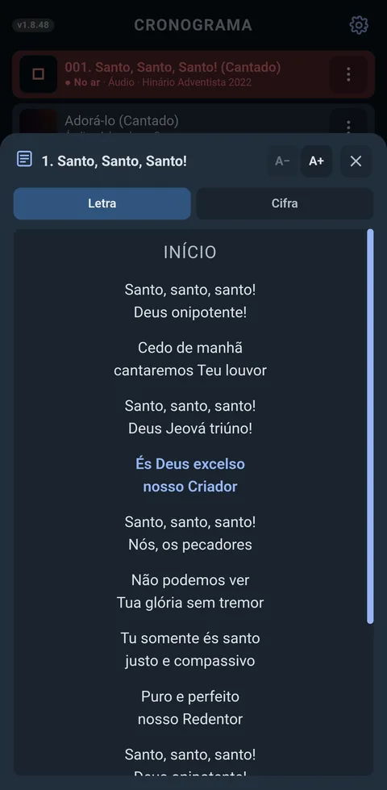
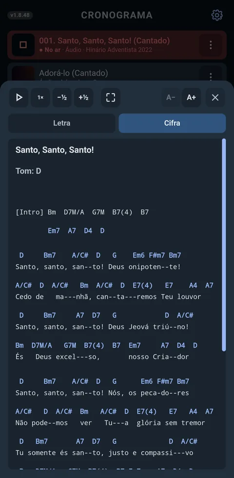
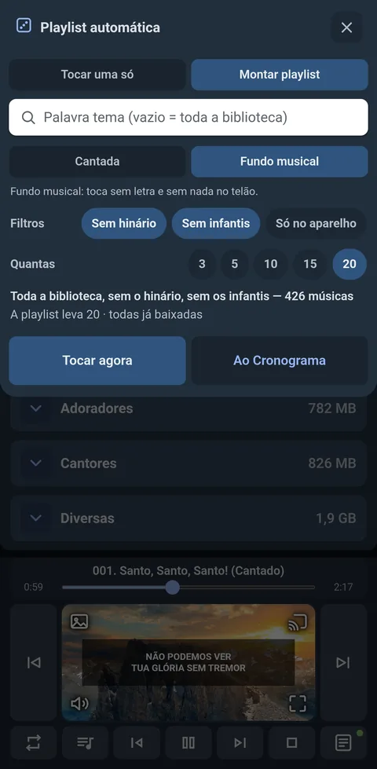
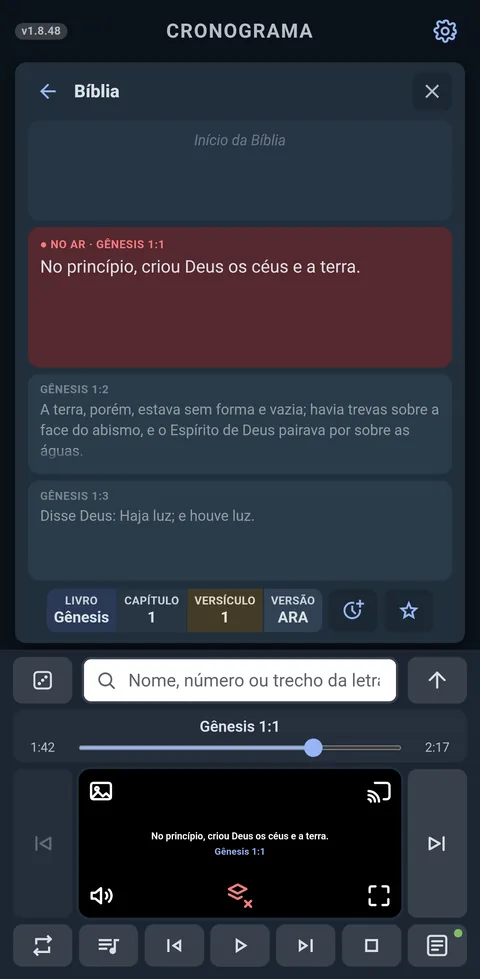
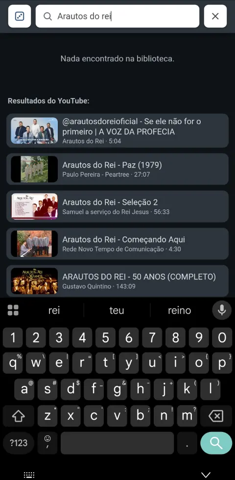

Guia de instalação
- Baixe o app Baixar
- Permita a instalaçãoO Android barra o arquivo e oferece um atalho para Configurações. Toque nele, ligue Permitir desta fonte para o navegador que você está usando e volte — a instalação continua de onde parou.
- Verifique com o Play ProtectAceite a verificação — ela é o próprio Google conferindo o arquivo. Terminada, toque em Instalar para concluir.
Tudo o que o culto precisa
Funciona sem internet: a projeção chega direto na TV conectada — ou, pelo navegador, a outras telas. Basta o Wi-Fi do local, mesmo sem internet; e se não houver Wi-Fi nenhuma, o próprio celular pode ser o ponto de acesso a que o computador se conecta.
Como é na prática










Modos de uso
O app abre no Modo Fácil: teclas grandes e só o essencial, para quem vai conectar a tela e tocar um louvor. Todas as demais funções ficam no modo avançado, em Configurações.
Enquanto nada estiver conectado, o Modo Fácil mostra só o cartão de conexão — é assim que ele abre da primeira vez. Ali há também Tocar neste celular, que libera a tela e faz o som sair do próprio aparelho, para ensaiar.